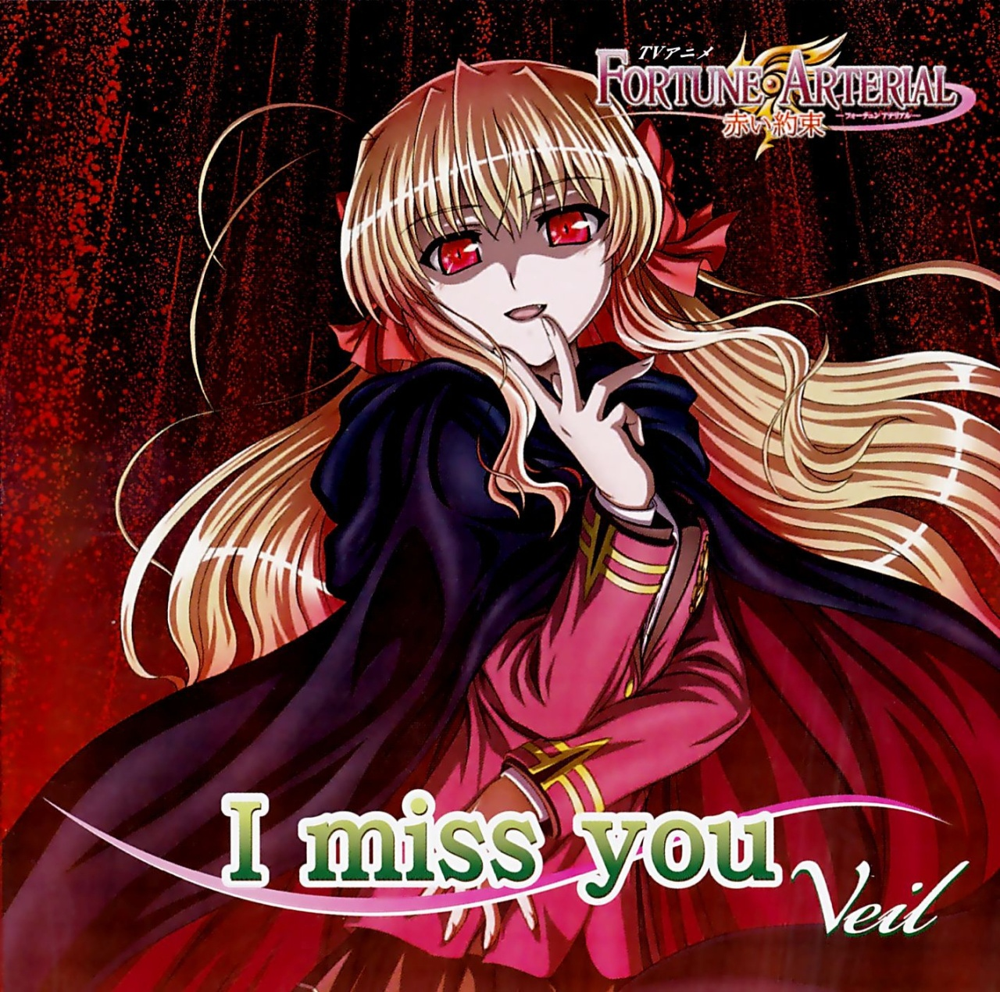

Английское название:Fortune Arterial: Akai Yakusoku
Русское название: Розвилка фортуны: обэщание связавшое нас...
Число серий: ТВ (12 эп.), 25 мин.
Жанр:романтика, мистика, школа
Создатели:Хасэгава Кацуми, Нава Мунэнори
Оценка:8/10
Год выпуска: 2010

Описание аниме: Кохэй Хасэкура – типичная «перелетная птица». Из-за работы родителей он сменил более 20 школ, научился быть легким на подъем и не привязываться к людям. Но к 17 годам парень устал от кочевой жизни и, когда родители уехали за рубеж, поступил в Сютикан, престижную академию-пансион на острове Тамацу, надеясь спокойно провести там остаток школьных лет. Однако фортуна распорядилась иначе, и с первых же дней в академии Кохэй оказался в гуще событий, попав по дороге в женскую баню, смешанное общежитие и до кучи в члены Школьного Совета!
Удивляться нечему - на то и два года весны юности в тропическом раю вдали от родителей, чтобы жить на полную катушку! Тем более что, как и положено, судьба тесно свела Хасэкуру с хрестоматийной группой красавиц – энергичным школьным идолом, нелюдимым математическим гением, двумя сестрами – подругами детства, и даже лоли с белым кроликом. Теперь парню круглые сутки придется бороться за свое счастье и решать проблемы новых знакомых, каждая из которых имеет, разумеется, мр-рачную тайну, а кое-кто и вообще вампир! Ну а как в приличной академии без вампиров? Несолидно получается…
Назад